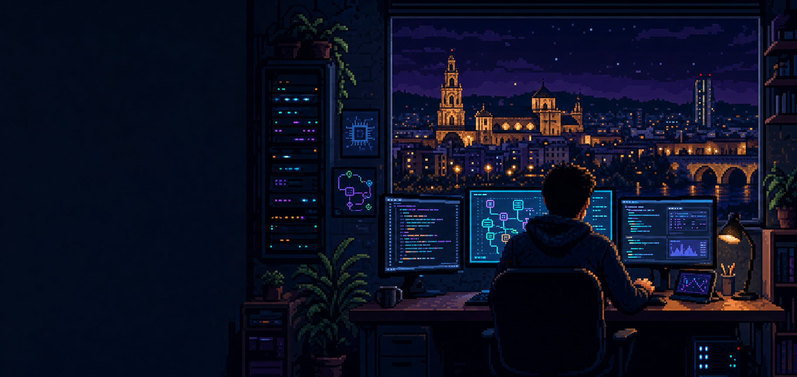

PROJECT_001ACTIVE
Aura Platform
Plataforma multicanal para centralizar conversaciones, automatizar atención con IA, gestionar equipos, colecciones y operaciones desde un mismo lugar.
VISITAR PROYECTO
SISTEMA LISTO // CÓRDOBA, AR
Systems Developer + Automation Builder
Construyo plataformas, agentes de IA e infraestructura que convierten procesos complejos en productos simples de usar.
01 // PLAYER PROFILE
Soy estudiante de Ingeniería en Sistemas en la UTN y desarrollador enfocado en automatización, inteligencia artificial y productos web.
Me interesa el punto donde el software deja de ser una demo y empieza a resolver operaciones reales: conectar canales, ordenar datos, automatizar decisiones y mantener toda la infraestructura funcionando.
02 // SELECT MISSION
Plataforma multicanal para centralizar conversaciones, automatizar atención con IA, gestionar equipos, colecciones y operaciones desde un mismo lugar.
VISITAR PROYECTOAgentes conectados a herramientas, memoria, catálogos y canales reales. Diseñados para responder, calificar, derivar y ejecutar acciones de negocio.
Servicios self-hosted, despliegues reproducibles, proxies, bases de datos, monitoreo, backups y automatización de infraestructura.
03 // INVENTORY
$ load --stack=production
JavaScript, HTML, CSS, Responsive UI
PHP, APIs REST, Webhooks, Auth
PostgreSQL, Directus, Redis
n8n, AI Agents, Integrations
Docker, Traefik, Linux, CI/CD
WhatsApp, Web Chat, Google APIs
> STATUS: READY TO BUILD
04 // OPEN CHANNEL
Estoy desarrollando productos en la intersección entre software, automatización e IA. Podés encontrar el código público y seguir mis próximos proyectos en GitHub.
github.com/vanilla015